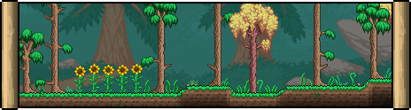
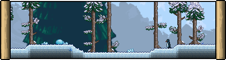
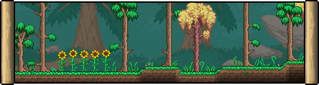
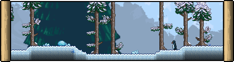

Terraria Biomes
 



Biomes
Forest Biome
The Forest is a biome that comprises the majority of the surface world and is typically where the player initially spawns. The global landscape of a Forest includes lots of grass, plenty of trees, lakes of various sizes, and occasional hills that can reveal cave entrances. Forests often contain one or more Living Trees that sometimes have an underground treasure room.
Snow Biome
The Snow biome, also known as the Tundra, is a Surface biome that takes on an arctic appearance with its constant snowfall, its ground made of Snow and Ice Blocks, and its boreal trees. It can be of moderate difficulty in the early game, becoming relatively easy with some basic equipment. The biome is always found in the direction of the Dungeon, opposite the Underground Desert and Jungle. It extends Underground and transitions to the Ice biome in the Cavern layer.
Desert Biome
The Desert is a sandy biome. Each map will generally contain at least one Desert area. The main Desert, present in every world, will be larger and will house the Underground Desert biome beneath. Pyramids can rarely appear in Desert biomes. Pools of water may rarely appear in the desert, which take on a sandy yellow (on Old Chinese version Old Chinese and tModLoader 1.3-Legacy version tModLoader Legacy) or turquoise (on PC version PC, Console version Console, Mobile version Mobile, and tModLoader version tModLoader) color.